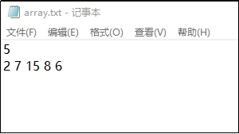
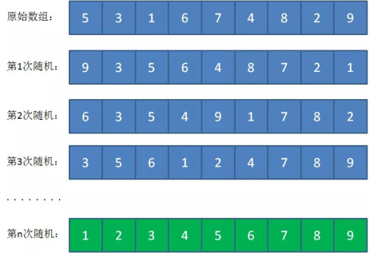
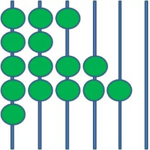
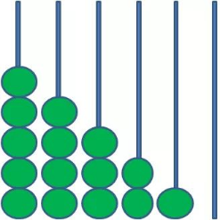
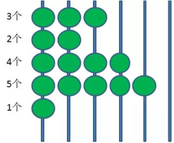
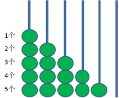
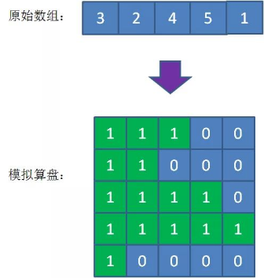
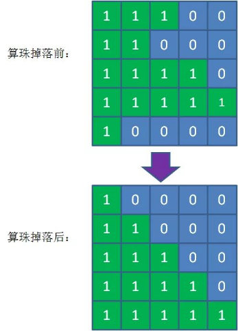
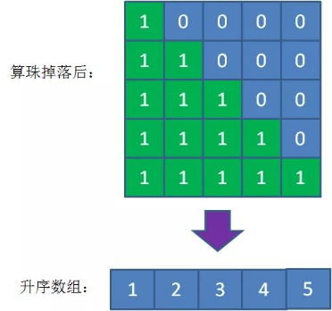

Assignment 3: Functions and Array Sorting
1. Objectives
- Practice defining and calling functions in C.
- Practice passing arrays and their lengths to functions.
- Explore three unusual sorting methods: monkey sort, bead sort, and spaghetti sort.
2. Reading Array Data
2.1 Required: Keyboard Input in the Terminal
Start your program, then type or paste the array data into the terminal. This is standard input during program execution; command-line arguments are not required.
Enter the number of elements, n, followed by n integers separated by spaces or line breaks. For example:
5 3 1 4 1 2
The first number specifies the array length and is not an array element. This example contains five elements, including two occurrences of 1. The expected ascending result is:
1 1 2 3 4
For this assignment, use a fixed-size array with a capacity of 20 elements. Accept lengths from 1 to 20 and element values from 1 to 20. These limits keep the two-dimensional bead representation small and avoid dynamic memory allocation. Use at most 8 elements when testing monkey sort.
2.2 Optional Extension: Input from a Text File
File input is optional. Complete the terminal-input version first. Students who have already studied file operations may add a file-input version; file handling is not needed to complete the required assignment.
Store the same data in a text file named array.txt. Put the array length on the first line and the space-separated array elements on the second line, using the format shown above.

Both input methods should produce the same array and length. The sorting functions should not depend on how the data was read.
3. Organizing the Program with Functions
Implement each sorting method in a separate function. Use helper functions to print an array, check whether it is sorted, and rearrange elements. For example, you may use these declarations:
void print_array(const int a[], int n);
int is_sorted(const int a[], int n); /* 1 if sorted, 0 otherwise. */
void shuffle_array(int a[], int n);
int monkey_sort(int a[], int n, int max_attempts); /* 1 on success, 0 on failure. */
void bead_sort(int a[], int n);
void spaghetti_sort(int a[], int n);Pass the length explicitly: an array parameter does not tell a function how many elements the caller supplied. Changes to array elements inside a sorting function affect the caller's array.
All three sorting methods must produce nondecreasing order, allowing equal adjacent values. Keep the original input and make a fresh copy before testing each method, so that every method starts with the same unsorted data. Copy elements with a loop; do not use array assignment.
4. Monkey Sort
4.1 Idea
The familiar thought experiment of a monkey typing at random suggests that, given enough attempts, a meaningful text might eventually appear. Monkey sort, also known as bogosort, uses a similar idea: rearrange the array randomly and check whether it happens to be sorted.

This is deliberately inefficient. It is useful here for practicing functions, random numbers, and array operations, not as a practical sorting algorithm. A finite run is not guaranteed to succeed.
4.2 Random Rearrangement in C
One simple approach is to choose two array indices at random, swap their elements, and repeat this operation several times. For this exercise, let shuffle_array() perform n such swaps per call. The indices may be equal. This rearrangement is sufficient for the exercise, but it does not guarantee that all permutations are equally likely.
The function rand() from <stdlib.h> returns a pseudorandom integer between 0 and RAND_MAX, inclusive. For positive n, rand() % n produces a valid index from 0 to n - 1. This simple mapping can have a small bias; it is acceptable for this introductory exercise.
Initialize the generator once in main, before sorting. Use a fixed seed while debugging:
#include <stdlib.h>
/* Inside main, before calling monkey_sort: */
srand(1);The same seed reproduces the same sequence on the same implementation. To explore different runs, change the seed. Alternatively, include <time.h> and use srand((unsigned int)time(NULL));. Runs started within the same second may use the same seed. Do not reseed inside the shuffle function or sorting loop, and do not assume that random values are always distinct.
4.3 Programming Task
- Implement
is_sorted()by comparing adjacent elements. An array with one element is already sorted. - Implement
shuffle_array()using swaps. Preserve every original element, including duplicates. - Check whether the array is sorted before shuffling. If it is not, shuffle and check again.
- Count shuffle attempts and stop after at most 100,000 attempts. Return success if the array is sorted, including after the last permitted attempt; otherwise report that the attempt limit was reached. Do not label an unsorted result as sorted.
Begin with 3-5 elements and test at most 8. If a longer array is entered, skip monkey sort with an explanatory message and still run the other two methods. The attempt limit is a runtime safeguard, not a guarantee of success.
5. Bead Sort
5.1 Idea
Imagine beads arranged on vertical rods, like an abacus. Each horizontal row represents one positive integer: the number of beads in that row is the integer’s value.

If the beads can slide freely, gravity makes them fall to the bottom of each rod.

After the beads settle, counting the beads in each row from top to bottom gives the original values in nondecreasing order. The following figures compare the row counts before and after the fall.


5.2 Programming Task
- Find the largest array value, m. Use a fixed
int beads[20][20]array initialized to zero; only the firstnrows and first m columns are active. - Represent input value
a[i]by placing 1s in the firsta[i]columns of rowi. The remaining cells contain 0s.

Simulate gravity independently in each active column. Count the number of 1s, clear that column, and place the same number of 1s in its bottommost rows. Treat row 0 as the top and row n - 1 as the bottom.

Finally, count the 1s in each row from top to bottom and write these counts back into the one-dimensional array.

Implement this procedure in bead_sort(). Do not replace it with another sorting algorithm. The positive-integer input restriction and maximum value of 20 keep the representation within the allocated array.
6. Spaghetti Sort
6.1 Idea
Imagine a bundle of rigid spaghetti strands of different lengths standing upright on a table, with their lower ends aligned. Lower your hand from above. It first touches the longest strand. Remove that strand and continue downward to find the next longest, and so on.
6.2 Programming Task
Represent the hand's height with an integer variable initialized to the largest array value. At each height, scan the input array and collect every element equal to that height. Then decrease the height by 1 and repeat until height 1 has been processed.
The values are found from largest to smallest. To produce ascending output, place them into a separate result array starting at index n - 1 and moving toward index 0. Copy the result back to the input array after the scans are complete. Do not overwrite input values while you are still scanning them. Be sure to preserve duplicate values.
Implement the procedure in spaghetti_sort(). Consider why this method may do unnecessary work when the largest value is much larger than the number of elements.
7. Testing and Submission
Submit your C source code and a short record of your tests. The required program must accept terminal input, call the sorting functions, and clearly label each method's output. File input is an optional extension.
Test at least the following cases:
- A single element.
- An already sorted array and a reverse-sorted array.
- An array containing duplicates, such as
3 1 4 1 2, and an array with all values equal. - A 20-element array containing the maximum allowed value, 20, for bead sort and spaghetti sort; skip monkey sort for this input.
- Invalid input, such as a length of 0 or 21, an out-of-range element, or nonnumeric input.
For every successful sort, check both that the result is nondecreasing and that it contains exactly the original elements with the same counts. While debugging monkey sort, temporarily use a small attempt limit to check the failure-reporting path.
Briefly discuss why monkey sort is unreliable for large arrays, how the largest element affects bead sort's storage needs, and why spaghetti sort can be slow for large values.